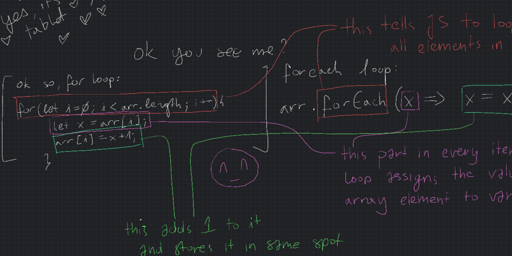

Problem Solving
How do I solve problems?
My main approach to problem solving is to ASK FOR HELP! When you need help, what do you do? You ask for it, of course! This can mean a few different things, such as asking Google, to asking people for help! I also like to figure it out by breaking it down and going piece by piece, using pseudocode before I crack some code out, trying different methods and checking error messages and the console to see where I went wrong.
Asking for help
One time, I was horribly stuck on a part of the javascript intro piece in Sprint 3- figuring out how to use a for each loop. My partner was online at the time. He is a software developer and multiple times already had told me I could ask him for help at any time but I was stubborn! I was putting off asking for help and doing all I could on my own with little success. I checked the discord for people also stuck on the problem, I googled it, I combed through google results but I could not figure it out on my own. So I asked for help from my partner and he dutifully pulled up his tablet and started sharing the screen, like a teacher writing on a blackboard. He went through each step of a for each loop carefully, and I followed along, things finally clicking into place! I felt so relieved and kind of proud of myself once I figured out the problem with some help. I wouldn’t have been able to get it in that amount of time without asking for assistance, and I got a much better understanding of how it worked.
Figuring it out myself
When I got to Sprint 4 I was feeling a lot more confident in what I was capable of, and during the built in methods section I was able to solve the deBee portion of the task with relative ease. I had to remove the word “buzz” from a string and then return it. I looked at the previous problems that I had struggled on earlier in Built-In Methods, looking at .join, .split, and good ol Google to give me that last piece of the puzzle. I had struggled with .split and .join earlier so I was already familiar with it, and the prior struggle made me work through and understand it a lot more. And then I knew Google would be able to give me exactly what I needed to remove a word, so with a little bit of tinkering I managed it quite quickly on my own. I felt very confident afterwards, and happy with the progress I had made during the bootcamp so far.
Using different methods
Pseudocode - sometimes I forget to do it! But I feel like laying out what I have to do
for each step would be helpful. I usually just jump in and start doing it if I already
have an idea what to do however.
Trying something - that’s straightforward! That’s what I always do. I like to
experiment and try new things.
Rubber duck method - I haven’t tried this one yet, but I was thinking of investing in a
little friend to sit atop my monitor that I can talk to when I feel stuck.
Reading error messages/console.logging - I always do this! I run the code after every
adjustment to see what is happening and make sure that things are being returned
correctly.
Googling - my saviour! It’s what I turn to first when I can’t figure it out on my own.
Asking peers/coaches for help - I tend to check the discord first to see if anyone else
has gotten caught in the same part, and then I post my own little call for help if I can’t
find it.
Reflection - I’m not so good at this one! I often rush
ahead out of excitement and come back to something when it appears in another
problem later instead.